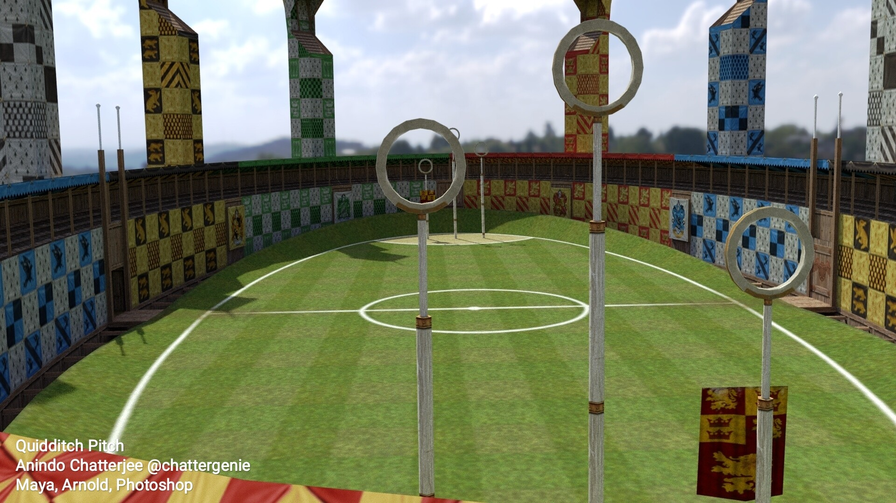

Our campus
Here u learn transfiguration, Charms, Potions, History of Magic, Defence Against the Dark Arts

Classroom

Ground

Slytherin is one of the four Houses at Hogwarts School of Witchcraft and Wizardry, founded by Salazar Slytherin.[1] In establishing the house, Salazar instructed the Sorting Hat to pick students who had a few particular characteristics he most valued. Those characteristics include cunning, resourcefulness, leadership, and ambition.
Ravenclaw values intelligence, learning, wisdom and wit.[HP5][HP7] The house mascot is an eagle and the house colours are blue and bronze (blue and silver in the Harry Potter and Fantastic Beasts films and on the ties and scarves). During the books, the head of this house is the Charms teacher, Professor Filius Flitwick, and the house ghost is the Grey Lady.
Gryffindor values bravery, daring, nerve, and chivalry. Its emblematic animal is the lion, and its colours are scarlet and gold. Minerva McGonagall was the most recent Head of Gryffindor. Sir Nicholas de Mimsy-Porpington, also known as "Nearly Headless Nick", was the House Ghost. The founder of the House was Godric Gryffindor. Gryffindor corresponds to the element of Fire.
Hufflepuff values hard work, patience, justice, and loyalty. The house mascot is the badger, and canary yellow and black (or golden yellow and graphite in the Fantastic Beasts films) are its colours. During the books, the Head of this house is the Herbology Professor Pomona Sprout, and the house ghost is the Fat Friar. According to Rowling, Hufflepuff corresponds roughly to the element of earth. The founder of this house is Helga Hufflepuff.
Here u learn transfiguration, Charms, Potions, History of Magic, Defence Against the Dark Arts
The subject had an extraordinarily high turnover of staff members — throughout Harry Potter's time at Hogwarts, no Defence Against the Dark Arts teacher has remained at Hogwarts for more than one school year. These included Quirinus Quirrell,[13] Gilderoy Lockhart, Remus Lupin, Bartemius Crouch
Jnr impersonating Alastor "Mad-Eye" Moody, Dolores Umbridge, Severus Snape, and Amycus Carrow